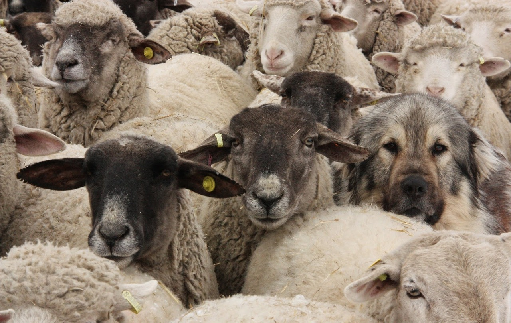
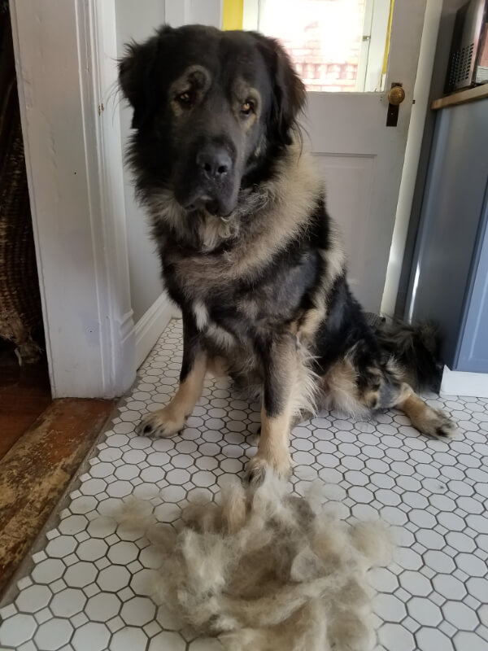
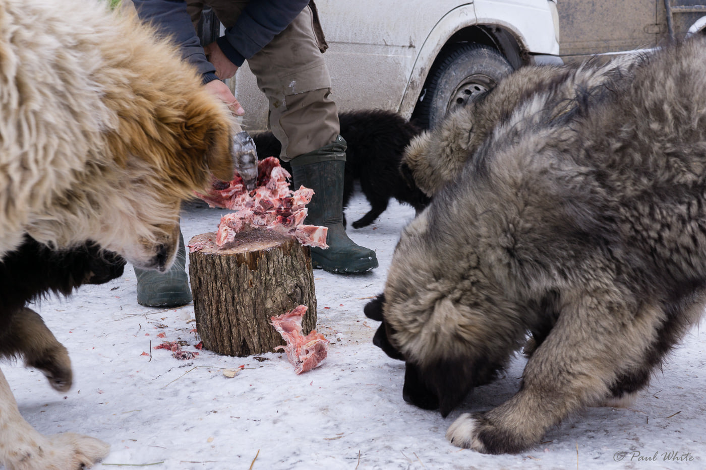
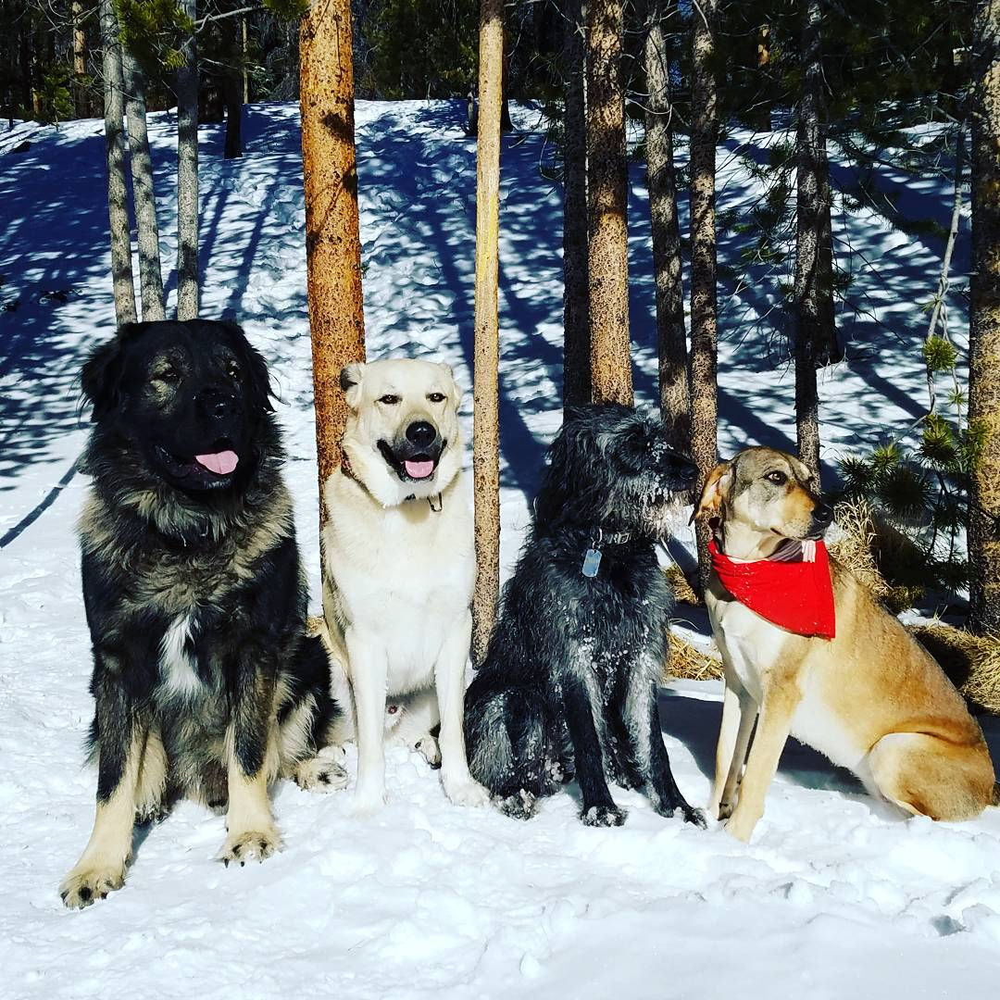
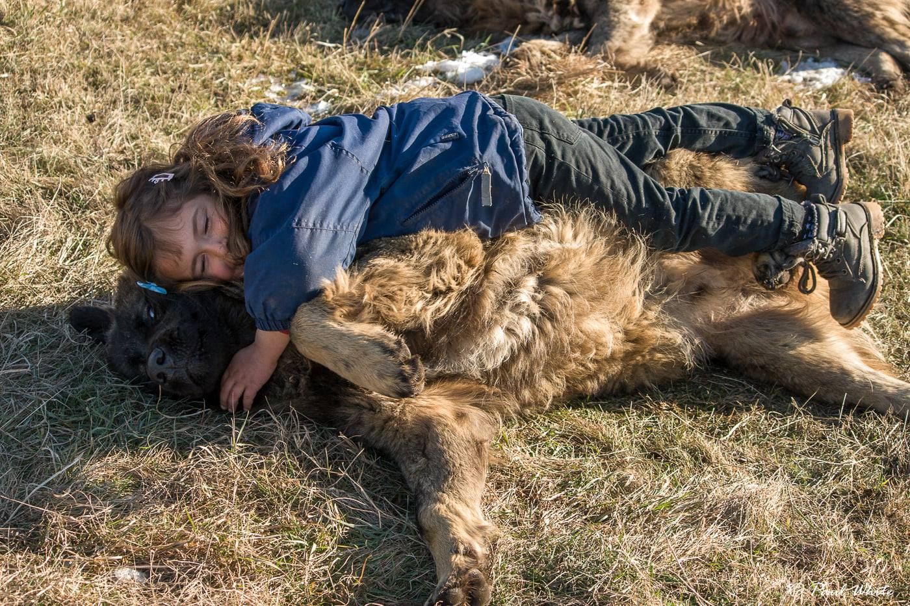
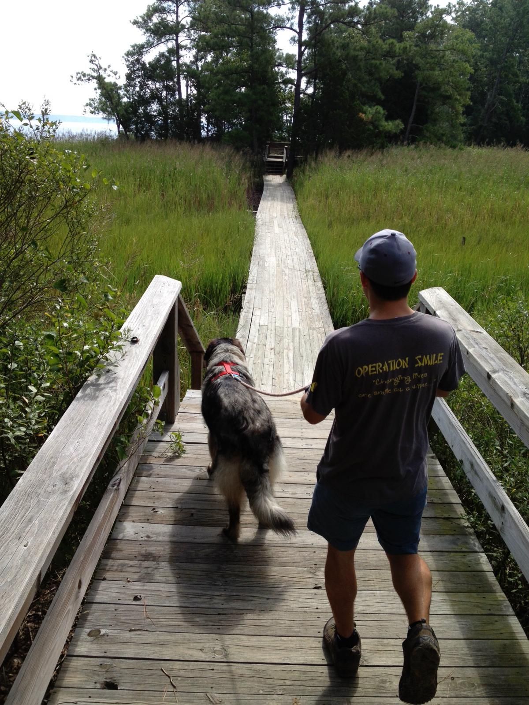
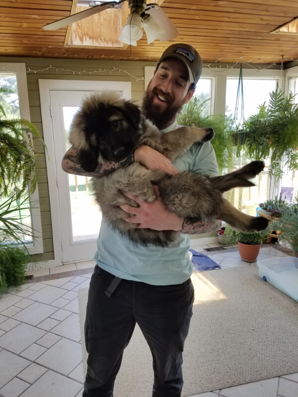

Group of Sarplaninac resting under a tree together
With how rare the Sarplaninac is, it is no wonder that many people have a lot of similar
questions about this uncommon breed of LGD. Below you can find some answers to the questions
we are asked most frequently, along with some questions we believe you should ask yourself before deciding
if a Sarplaninac is right for you. Don't see the answer to a question you have? Send us your question to our Instagram page
at @SarplaninacDogs,
we would love to answer any questions you might have!
How do you say Sarplaninac?
Sarplaninac is pronounced shar-pla-nee-natz.
Where do they come from?
The Sarplaninac originated in the southeastern mountainous regions of (former) Yugoslavia. These
amazing working dogs were named after the Šar Mountains (Šar Planina), a mountain range within the
Balkans that reaches from the NW regions of North Macedonia, parts of Kosovo, and NE regions of Albania.
Sarplaninac translates literally to "(Dog) of the Šar Mountains" or "Šar Mountain Dog".
What was their original purpose?

A Sarplaninac blending in among the flock
The original purpose of the Sarplaninac was to protect herds of sheep. They are a livestock guardian dog,
which means they are a working breed meant to protect livestock from predators and other threats.
How long do they live?
Sarplaninac Livi at 9½ years old and in great health
The lifespan of the Sarplaninac ranges from 10-14 years. There have been a few to live beyond this as well. Compared to
other large breed dogs, the Sarplaninac have a decent lifespan.
Are they barkers?
Sarplaninac barking to keep predators away
It is important to understand that the Sarplaninac is a working breed with the instinct to guard and alarm if they feel
threatened or that something is out of the ordinary. Yes, they do bark. They are not excessive
barkers or considered yappy, but they will bark to alarm any potential predators of their presence, or to bring your
attention to a threat.
Who walks who?
These dogs are strong. It is imperative that you are able to maintain control over your Sarplaninac. If
while on a lead, they encounter an aggressive dog or other exciting event, are you able to keep them under control? It is
easy to be dragged by an untrained animal that weighs as much as you do.
Do they shed?

Sarplaninac after a large grooming
Yes, Sarplaninac do in fact shed! They have a thick double-coat that works to provide them with warmth
in colder climates, as well as keeping them cool when the temperature is warmer. They have a yearly blowout of this
double-coat; however, with regular brushing, their coat is very manageable.
NEVER shave a Sarplaninac! Their double-coats do not typically grow back correctly and can
result in a dog that is no longer prepared for many temperatures. Consult a veterinarian if you are concerned about the
coat of your Sarplaninac.
How much do they eat?

Sarplaninac waiting to get a piece of meat from their shepherd Photo by Paul White
Surprisingly enough, the Sarplaninac does not require a ton of food. For example, a 130lbs. male with
moderate daily activity will be satisfied with roughly 4 cups of food/day. They do, however, require a
quality, well-balanced food that provides them with the necessary nutrition. It is important to maintain a
healthy weight to keep unnecessary pressure off of joints to avoid health issues down the road. It is also important
for developing puppies to not grow too fast; check with your breeder to see what kind of food they
use and recommend for growing Sarplaninac puppies.
Are they good with other dogs?

Sarplaninac sitting with group of other dogs
Generally, they are okay with dogs that they are raised with. If socialized with many dogs at a young age,
there is potential for less dog aggression as they grow up, in my experience; however, they are also livestock guardians
and have a purpose of guarding from wolves, coyotes and other canines, so they can certainly have some canine aggression
in some cases.
Are they good with kids?

A child rolling around with Sarplaninac puppy Photo by Paul White
Sarplaninac are generally good with children, especially if the dog is included as part of the family unit and children
are present. It is recommended that children are supervised when with any dog, large or small. Sarplaninac puppies who do
not know their size can easily knock a child over in play. A small human could also easily be dragged by a Sarplaninac,
unless well trained. If a Sarplaninac is not familiar with children's different forms of play, they may also become
protective if they feel their family member is in harms way.
Do they dig?
Sarplaninac laying in holes they dug to keep cool
Sarplaninac do dig! When temperatures increase, they will often dig holes to lie in and keep cool.
In my experience, if you fill in their hole, they will start another. You may also need to consider reinforcing your
yard if you get a Sarplaninac, as they could also go under a fence being the effective diggers they are.
How much activity do they need?

Man walking with his Sarplaninac in nature
Sarplaninacs are bred to cover large distances while moving alongside the flock in the mountainous regions;
therefore, that should be a good indicator of the amount of activity they will require. These dogs are in need of
good mental and physical stimulation if they are not in a working situation / guarding livestock. When in use as a companion animal in a home setting,
multiple walks a day for a minimum 30 min/each is highly recommended to keep a Sarplaninac from getting "bored"
and potentially becoming destructive.
Am I ready for a Sarplaninac?

Sarplaninac puppy being held by a man
Thinking about getting a Sarplaninac puppy, or perhaps you are thinking about rescuing a Sarplaninac?
These next questions are for those that are considering adding a Sarplaninac to their pack and want to make sure it will be a good fit for their situation. If you can answer yes to these questions, you might be ready to be a Sarplaninac owner!